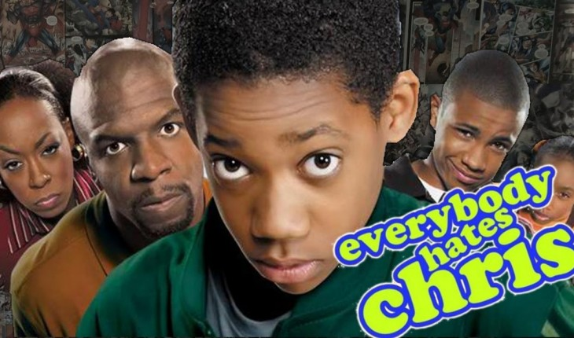

Todo mundo odeia o Crhis. Menos o Brasil!
Hoje o assunto será do Brooklyn, e se você já logo pensou na
série Todo Mundo Odeia o Chris, você acertou. Pois, hoje
iremos abordar algumas verdades e curiosidades sobre essa série
que gerou muitas risadas por conta das histórias mal sucedidas de Chris,
ou por causa dos gritos de Rochelle.
0
Basicamente, essa série de 4 temporadas e 88 episódios se passou
nos anos de 1982 à 1987. Porém, só foi produzida e transmitida em meados de 2005.
Essa série relata a história de vida de um garoto negro do Brooklyn e sua relação familiar.
No entanto, essa história foi produzida com um humor mais exagerado e caricato.
Chris

Contudo, por trás de todo o humor e experiências quase
sempre ruins, e algumas até mesmo inacreditáveis, existe um
fundo de verdade. Na verdade, a série Todo Mundo Odeia o Chris,
foi baseada na história real do ator Chris Rock.
Porém, vale ressaltar que nem tudo foi contado como exatamente aconteceu,ou seja, houve algumas alterações.
Curiosidades de todo mundo odeia o Chris
Como já falamos a série Todo Mundo Odeia o Chris foi baseada na
história real do ator Chris Rock. A série se baseou na infância no Brooklyn de Chris.
Uma semelhança da infância do Chris da série com o Chris da vida real
é que realmente sua infância no Brooklyn realmente não era das melhores.
Como por exemplo, o ator de Hollywood realmente enfrentou escolas
populares, em que a grande maioria dos alunos eram brancos. Porém, ele
não era o único aluno negro, como relata na série. Além disso ele também sofreu bullying e racismo como relata na série.
Como por exemplo, o ator de Hollywood realmente enfrentou escolas
populares, em que a grande maioria dos alunos eram brancos. Porém, ele
não era o único aluno negro, como relata na série. Além disso ele também sofreu bullying e racismo como relata na série.